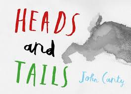
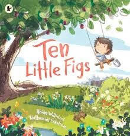

Perceptual development is the process by which infants and toddlers begin to perceive and interpret the sensations they encounter in their surrounding world. These are the big five senses: sight, sound, touch, taste, and smell, and all of them combine to guide children and make their environment comprehensible to them (Sheridan et al., 2022). Since a baby is born with these senses, they learn, find the comfort they need, and associate with individuals and things. Sensory-rich activities can be facilitated by educators who play a critical role in promoting the development of children’s brains, cognitive functions, and emotional safety (Berk & Meyers, 2023; Essa & Burnham, 2019).
Teaching Competencies & Skills
Teaching Competencies
Design and implement activities that use multiple senses and appropriately engage all five senses (Berk & Meyers, 2023).
Note and accommodate the personal sensory preferences and sensitivities of children, e.g., does not like loud noises or does not like wearing dark colors (Sheridan et al., 2022).
Ensure exploration is both safe and supervised, using non-toxic, age-appropriate materials within reach of small hands and bodies (Australian Children’s Education & Care Quality Authority, 2023).
Support vocabulary and sensory awareness by using rich descriptive language, such as “squishy sponge” or “listen to the quiet shaker” (Feeney et al., 2019).
Curriculum Areas
Science: Investigating cause and effect with water activities, warm and cold toys, and materials that change in texture (Department of Education, Employment and Workplace Relations, 2009).
Art: Finger painting, texture collages, and sponge stamping.
Music: Using soft and loud sounds, rhythm, and tone with instruments such as shakers, bells, and drums.
Learning Opportunities
Age Group
Activity
0–12 months
Sensory Time with Textured Mats
12–24 months
Taste & Texture Exploration
2–3 years
Sensory Tray Exploration
Books

Heads and Tails by John Canty – Children's visual perception, memory, and reasoning are developed through this visually stimulating book that asks them to guess animals by looking at different body parts (Canty, 2017).

Ten Little Figs by Rhian Williams & Nathaniel Eckstrom – Integrates counting with sensory-rich Australian wildlife and plants to enhance visual-spatial awareness, pattern identification, and aural rhythm (Williams & Eckstrom, 2020).
Songs
The Five Senses Song – Learn each of the senses with repetition and action words and phrases.
This is the Way We Play – A creative, customizable sensory song with actions and words (e.g., "This is the way we squish and squeeze").
Rhymes
Tickle Tickle Little Star – Touch and rhythm, a bonding game and a sensory experience.
Open Shut Them – Builds fine motor skills and visual tracking.
Games
Mystery Box Game – Children can feel a hidden object by putting their hand inside a covered box. Without seeing the item, they investigate its texture, shape, and size through touch. The objective is to improve tactile discrimination by naming and guessing the object. Teachers promote the use of adjectives like "soft," "bumpy," and "round." This entertaining exercise improves vocabulary and sensory awareness.